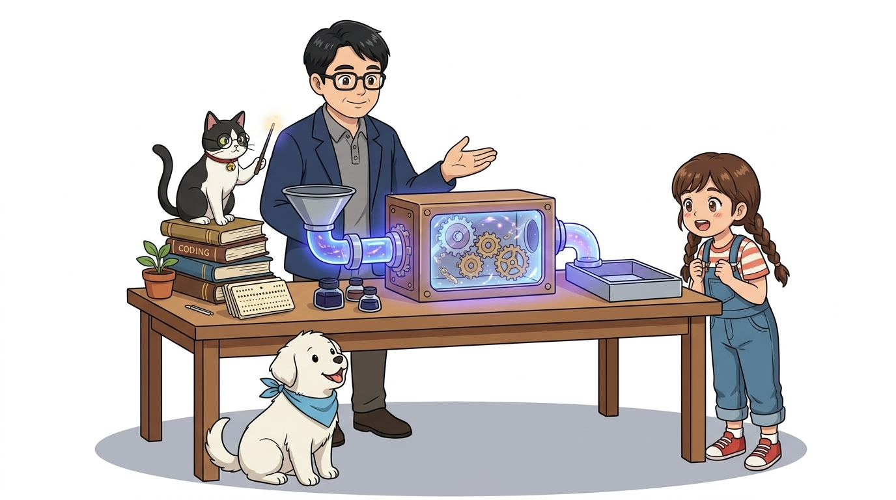
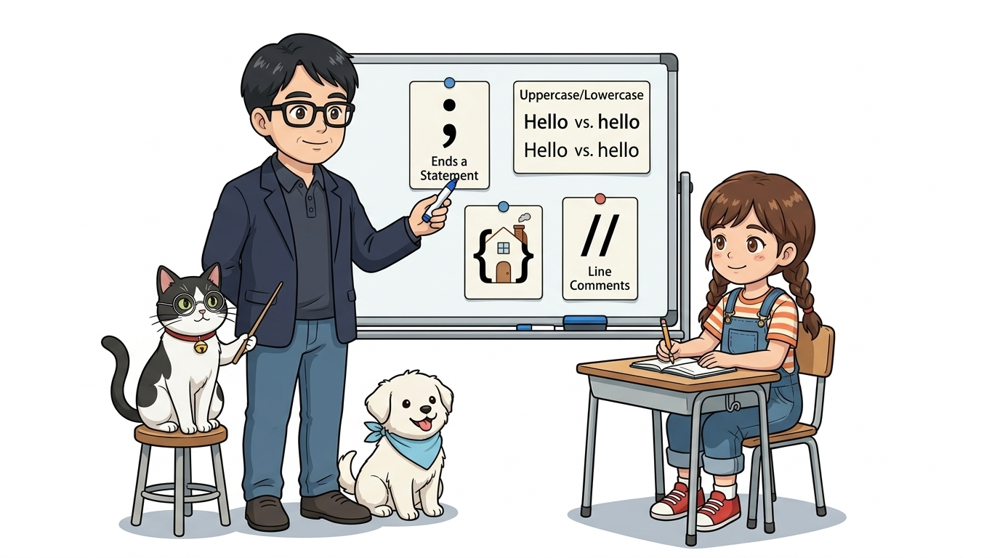
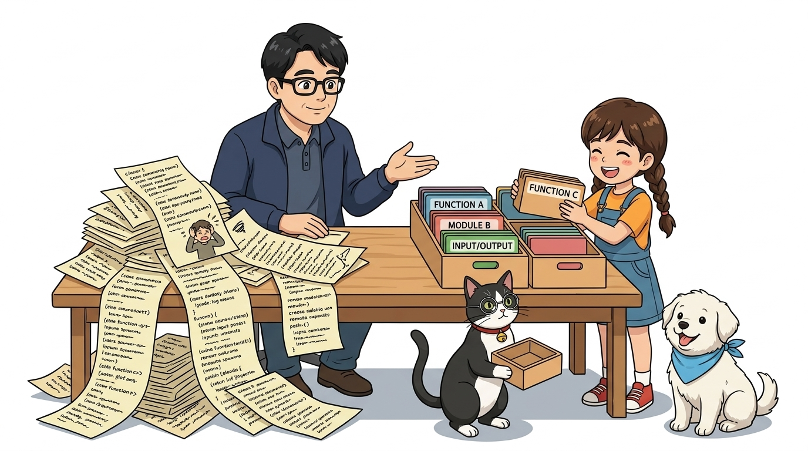
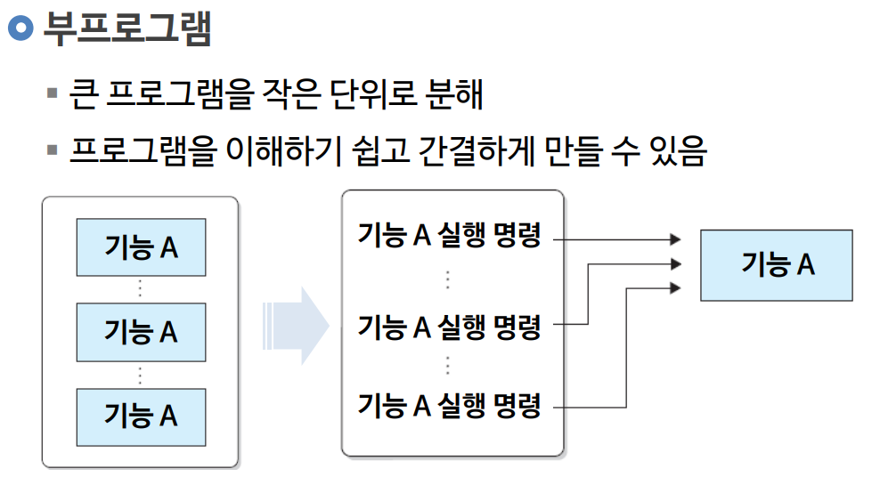
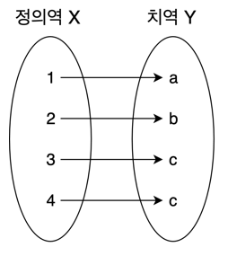
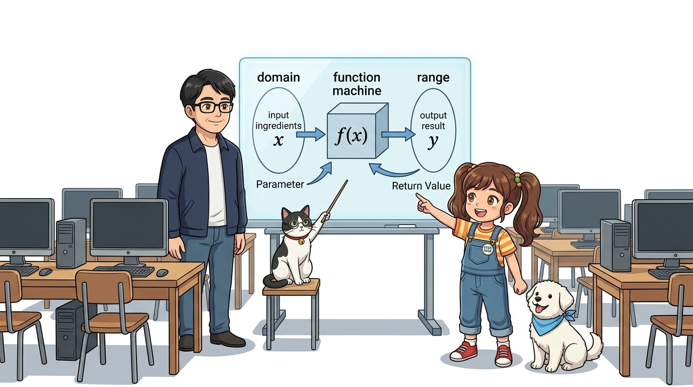
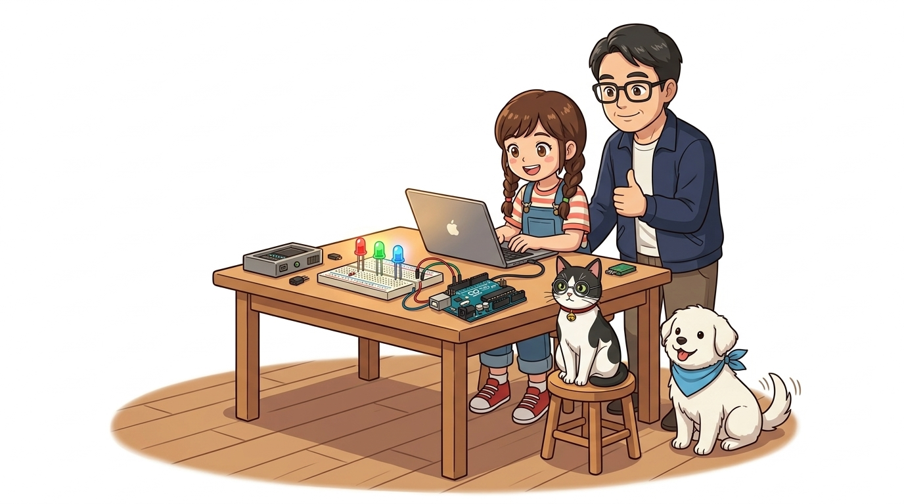
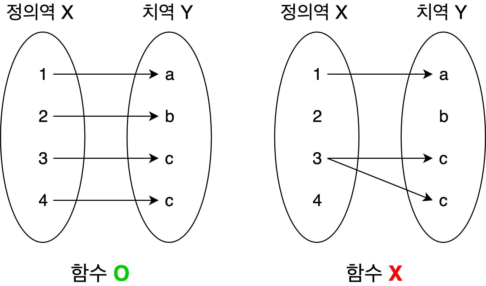
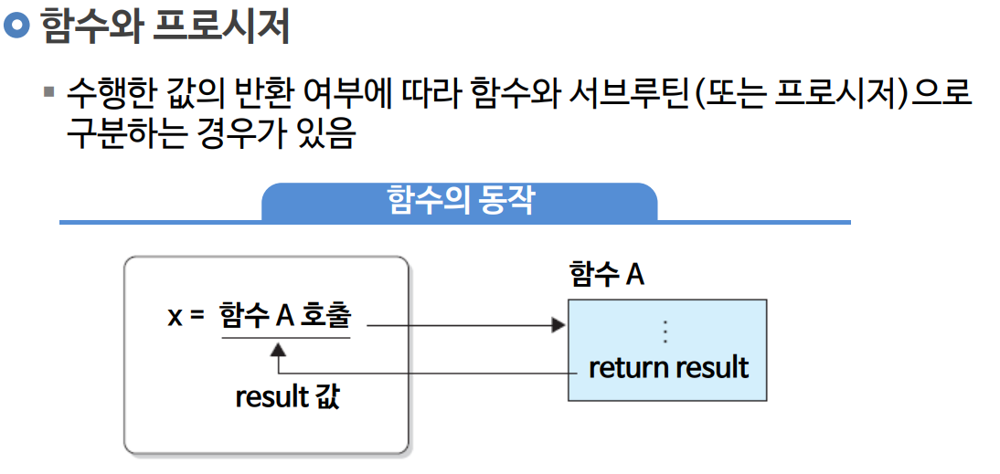

020_C언어기초1_마법상자함수 🎁
👧 도로시: “교수님! 코드가 길어지면 똑같은 걸 계속 또 써야 하나요? 너무 손이 아파요!”
👨🏫 호진 교수님: “하하, 도로시! 그럴 땐 C언어의 가장 강력한 마법 도구 상자 ‘함수(Function)’를 쓰면 된단다. 재료를 넣으면 뚝딱 완성품이 나오는 자판기 같지!”
🐱 조수 지니: “야옹! 반복되는 명령을 이름 붙인 상자 속에 쏙 넣어두면 언제든 이름만 불러서 꺼내 쓸 수 있답니다!”
🐶 토토: “멍멍! (마법 상자에 쏙 넣으면 코드가 깔끔해진다 멍!)”

- 🖥️ 강의 슬라이드: slides.md
1. 아두이노의 기초 언어: C/C++ 기본 문법 규칙 📜
아두이노 스케치(Sketch)는 사실 C/C++ 프로그래밍 언어로 작성됩니다. 본격적인 함수 학습에 앞서, 컴파일러가 엄격하게 검사하는 C언어의 4대 기본 문법 규칙을 먼저 기억해야 합니다.
- 문장의 마침표, 세미콜론 (
;):- C언어에서 모든 실행 명령문은 반드시 세미콜론(
;)으로 끝나야 합니다. 세미콜론을 빠뜨리면 컴파일러는 문장이 어디서 끝나는지 알 수 없어 오류를 냅니다.
- C언어에서 모든 실행 명령문은 반드시 세미콜론(
- 대소문자 엄격 구분 (Case Sensitivity):
- C언어는 대소문자를 완전히 다른 글자로 취급합니다. 예를 들어
pinMode와pinmode,digitalWrite와DigitalWrite는 전혀 다른 단어입니다!
- C언어는 대소문자를 완전히 다른 글자로 취급합니다. 예를 들어
- 코드 블록의 울타리, 중괄호 (
{ }):- 여러 줄의 명령어를 하나로 묶을 때는 여는 중괄호
{와 닫는 중괄호}로 감싸서 ‘코드 블록(Block)’을 형성합니다.
- 여러 줄의 명령어를 하나로 묶을 때는 여는 중괄호
- 사람을 위한 설명문, 주석 (Comments):
//: 한 줄 주석 (컴파일러가 무시)/* ... */: 여러 줄 주석
👧 도로시: “세미콜론 하나만 빼먹어도 아두이노가 오류를 내며 멈추는 이유가 있었군요!”
👨🏫 호진 교수님: “그렇단다. 문장의 마침표인 세미콜론과 대소문자, 중괄호 울타리를 잘 지켜주면 C언어는 세상에서 가장 든든한 일꾼이 되어준단다!”
🐱 조수 지니: “제가 안경 너머로 매의 눈으로 문법 오류를 잡아내 줄게요, 야옹!”

2. 코드 반복의 함정과 번거로움 😫
- 컴퓨터와 아두이노는 우리가 적어준 명령어를 위에서부터 순서대로 실행해요.
- 만약 똑같은 동작(예: LED를 깜빡이거나 모터를 돌리는 일)을 프로그램 곳곳에서 여러 번 실행해야 한다면, 같은 코드를 복사해서 계속 붙여넣어야 할까요?
// 똑같은 계산이나 제어를 4번이나 반복해서 복사/붙여넣기 해야 한다면?
digitalWrite(13, HIGH); delay(500); digitalWrite(13, LOW); delay(500);
digitalWrite(13, HIGH); delay(500); digitalWrite(13, LOW); delay(500);
digitalWrite(13, HIGH); delay(500); digitalWrite(13, LOW); delay(500);
digitalWrite(13, HIGH); delay(500); digitalWrite(13, LOW); delay(500);
⚠️ 반복 복사의 3대 문제점
- 코드 길이 증가: 코드가 수백 줄로 불어나 읽기 어려워집니다.
- 수정의 지옥: 500ms 지연시간을 200ms로 바꾸려면 복사한 수십 군데를 일일이 찾아 고쳐야 합니다.
- 오류 발생: 수정하다가 한 줄이라도 빠뜨리면 찾기 힘든 버그가 발생합니다.

3. 마법의 도구 상자 ‘함수’ 만들기 📦
반복되는 명령들을 중괄호 { } 안에 모아 넣고, 이름을 붙여주는 것을 ‘함수 정의(Function Definition)’라고 해요.
// 1. 함수 정의하기 (도구 상자 만들기)
void blinkOnce() {
digitalWrite(13, HIGH);
delay(500);
digitalWrite(13, LOW);
delay(500);
}
// 2. 함수 호출하기 (이름만 부르면 어디서든 즉시 실행!)
blinkOnce();
blinkOnce();
blinkOnce();
🐱 조수 지니: “이제 이름 뒤에 소괄호
()만 붙여서 부르면 몇 번이든 바로 실행된단다! 코드를 고칠 때도 함수 내부의 코드 딱 한 곳만 고치면 끝이야!”

4. 현대 프로그래밍은 ‘함수의 집합체’ 🧩
- 멋진 로봇, 스마트홈 시스템, 자율주행 자동차도 모두 잘 짜인 작은 함수들이 모여서 완성돼요.
- 모듈화(Modularity): 큰 문제를 작은 부품(함수)으로 나누어 레고 블록처럼 조립하는 개발 방법론입니다.
📌 함수 분할의 장점
- 가독성 향상: 메인 코드가 한눈에 들어와 어떤 동작을 하는지 쉽게 읽힙니다.
- 유지보수 용이: 특정 기능에 문제가 생기면 해당 함수만 열어서 고치면 됩니다.
- 팀 협업 가능: “철수는
readSensor()함수를 만들고, 영희는displayLCD()함수를 만들자!”며 분업할 수 있습니다.
5. 함수의 유래: 수학에서 컴퓨터로! 📐
- 함수(Function, 函數)는 상자 ‘함(函)’ 자를 써요. “상자 안에 수를 넣는다”는 뜻이죠!
- 수학에서는 $x$라는 값을 상자에 넣으면 정해진 규칙에 따라 $y$가 계산되어 튀어나와요: \(y = f(x) = 2x + 1\)
👧 도로시: “수학 시간에 배운 $f(x)$가 프로그래밍의 함수와 같은 거였어?”
🐱 조수 지니: “완벽히 같아! $x$라는 재료를 주면 $2x + 1$이라는 작업을 거쳐 $y$라는 결과물을 내놓는 규칙 상자란다.”

6. 수학의 정의역과 치역 ➔ 프로그래밍 매개변수와 반환값 🎯
- 수학에서 함수에 집어넣는 입력값들의 모임을 정의역(Domain)이라고 해요.
- 함수 상자를 거쳐서 나온 결과값들의 모임을 치역(Range)이라고 불러요.
| 수학 개념 | C언어 프로그래밍 대응 | 설명 | 아두이노 비유 |
|---|---|---|---|
| 정의역 (입력) | 매개변수 (Parameter) | 함수를 실행하기 위해 건네주는 재료 | 제어할 핀 번호, 지연 시간, 주파수 |
| 함수 규칙 ($f$) | 함수 본체 (Body, { }) |
중괄호 안의 구체적인 C언어 실행 명령 | 핀 전압 출력, 센서 ADC 계산 |
| 치역 (출력) | 반환값 (Return Value) | 계산을 마치고 돌려주는 최종 결과 | 계산된 온도($^\circ\text{C}$), 거리($\text{cm}$) |

7. C언어 함수의 구조 4대 요소 🧱
C언어에서 함수는 다음과 같은 명확한 구조적 틀(문법)을 갖추어야 컴파일러가 인식합니다.
반환형 함수이름(매개변수타입 매개변수이름) {
// 실행할 C언어 명령어들 (함수 본체)
return 반환값;
}
- 반환형 (Return Type): 함수가 모든 일을 마치고 돌려줄 결과값의 자료형 (
int,float,char,bool등). - 함수 이름 (Function Name): 동작을 잘 나타내는 알기 쉬운 이름 (카멜 표기법
blinkLED,readTemperature권장). - 매개변수 목록 (Parameter List): 함수가 동작할 때 필요한 외부 재료. 없으면 빈 괄호
()로 둡니다. - 함수 본체 (Body): 중괄호
{ }안에 작성되는 실제 실행 코드 블록.

8. 반환값이 없는 함수: void의 의미 📭
- 모든 함수가 계산 결과를 돌려줄 필요는 없습니다.
- 하드웨어 핀에 전기를 흘려보내거나 화면에 글씨를 출력하는 것처럼 “동작만 수행하고 끝나는 함수”는 반환형 자리에
void를 적습니다. void는 영어로 “비어있다(Empty)”는 뜻입니다!
// 13번 핀에 연결된 부저를 1번 삐- 소리 내는 동작형 함수
void beepAlarm() {
tone(8, 1000, 200); // 8번 핀에 1000Hz 소리 0.2초 출력
delay(200);
// 반환할 값이 없으므로 return문이 필요 없습니다!
}
👧 도로시: “아두이노 기본 코드에 왜
void setup(),void loop()라고 쓰여 있는지 드디어 알겠어!”
🐱 조수 지니: “setup과loop는 아두이노를 준비시키고 반복 실행하는 ‘동작’만 할 뿐, 아무런 숫자나 글자를 보고서로 건넬 필요가 없기 때문이란다!”

9. 실전! 아두이노 맞춤형 매개변수 함수 만들기 🛠️
매개변수를 사용하면 하나의 함수로 여러 개의 다른 핀이나 다양한 시간을 자유자재로 제어할 수 있습니다.
// 핀 번호(pin)와 깜빡일 시간(durationMs)을 매개변수로 받는 만능 깜빡이 함수!
void blinkLED(int pin, int durationMs) {
digitalWrite(pin, HIGH); // 전달받은 pin에 불 켜기
delay(durationMs); // 전달받은 시간만큼 대기
digitalWrite(pin, LOW); // 불 끄기
delay(durationMs);
}
void loop() {
blinkLED(13, 500); // 13번 LED를 0.5초 주기로 깜빡!
blinkLED(12, 200); // 12번 LED를 0.2초 주기로 빠르게 깜빡!
blinkLED(11, 1000); // 11번 LED를 1초 주기로 느리게 깜빡!
}
🐶 토토: “멍멍! 함수 하나 만들었더니 13번, 12번, 11번 핀을 자유자재로 조종한다 멍!”

10. 결과를 돌려주는 함수: return문 📤
센서 측정값을 섭씨 온도로 변환하거나 두 숫자의 평균을 낼 때는 결과값을 돌려주는 반환 함수를 작성합니다.
// 아날로그 센서 값을 읽어 섭씨 온도(float)로 계산하여 반환하는 함수
float getTemperature(int pin) {
int rawValue = analogRead(pin); // 0 ~ 1023 아날로그 값
float voltage = rawValue * (5.0 / 1023.0); // 전압 변환
float temperature = voltage * 100.0; // 10mV 당 1도 (LM35 기준)
return temperature; // 최종 계산 결과를 호출한 곳으로 반환!
}
void loop() {
float currentTemp = getTemperature(A0); // 함수 호출 후 결과를 변수에 저장
Serial.print("현재 온도: ");
Serial.println(currentTemp);
delay(1000);
}
[!IMPORTANT] C언어 함수에서
return은 오직 단 하나의 값만 반환할 수 있습니다. 또한return명령을 만나는 순간, 함수는 그 즉시 종료되어 호출한 위치로 되돌아갑니다.

11. 아두이노의 양대 기둥: setup() & loop(), 그리고 main.cpp의 비밀 🔄
아두이노 스케치에 기본 제공되는 두 함수는 C 언어의 표준 런타임과 어떻게 연결되어 있을까요?
// 1. 초기화 함수 (전원 인가 시 딱 1회 실행)
void setup() {
pinMode(13, OUTPUT);
Serial.begin(9600);
}
// 2. 무한 반복 함수 (전원이 꺼질 때까지 계속 실행)
void loop() {
digitalWrite(13, HIGH);
delay(1000);
digitalWrite(13, LOW);
delay(1000);
}
🔍 아두이노 내부의 숨겨진 main.cpp 소스코드
표준 C언어 프로그램은 반드시 int main(void) 함수부터 시작해야 합니다. 아두이노 코어 내부에는 다음과 같은 숨겨진 main() 함수가 컴파일 시 자동으로 결합됩니다:
// 아두이노 내부 main.cpp (실제 구현부)
int main(void) {
init(); // 타이머, ADC 등 하드웨어 초기화
setup(); // 사용자가 작성한 setup() 1회 호출!
for (;;) { // 무한 루프 (while(true)와 동일)
loop(); // 사용자가 작성한 loop()를 끝없이 호출!
if (serialEventRun) serialEventRun();
}
return 0;
}

🌟 도로시와 지니의 이번 시간 핵심 정리! 🏆
축하합니다! 아두이노 프로그래밍을 관통하는 가장 핵심적인 기둥인 C언어 함수(Function)의 모든 비밀을 정복했습니다.
📋 핵심 요약 체크리스트
- C언어 기본 문법: 세미콜론(
;), 대소문자 구분, 중괄호 블록({}), 주석을 정확히 지킵니다. - 함수의 4요소:
반환형,함수이름,매개변수,본체의 역할을 완벽히 이해했습니다. void의 의미: 반환할 결과값이 없이 동작만 실행하는 함수에 사용합니다.- 매개변수와 반환값: 입력 재료는 매개변수로 전달하고, 최종 결과는
return으로 1개 돌려줍니다. setup()과loop(): 내부의main()함수가setup()을 1회 호출한 후loop()를 무한 반복 실행합니다.
👧 도로시: “이제 나만의 함수를 만들어서 복잡한 아두이노 코드도 블록처럼 깔끔하게 정리할 수 있어요!”
👨🏫 호진 교수님: “아주 훌륭하단다 도로시! 다음 시간에는 데이터를 담는 이름표 보관함, ‘C언어 기초2: 변수와 연산자’를 정복해 보자꾸나!”
🐱 조수 지니: “야옹! 지니 조수도 돋보기를 챙겨서 다음 모험을 준비할게요!”
🐶 토토: “멍멍! (변수 상자도 정복하러 가자 멍!)”